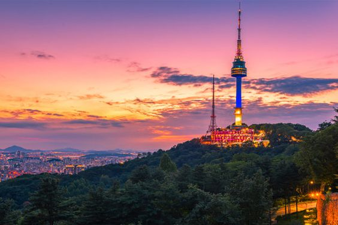
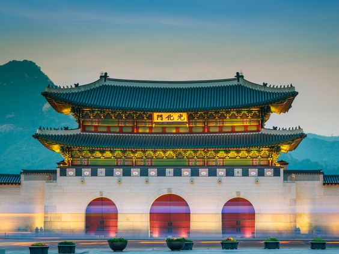
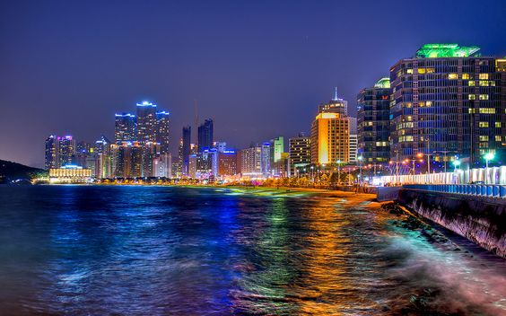
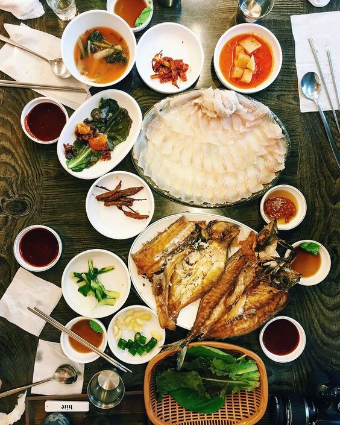
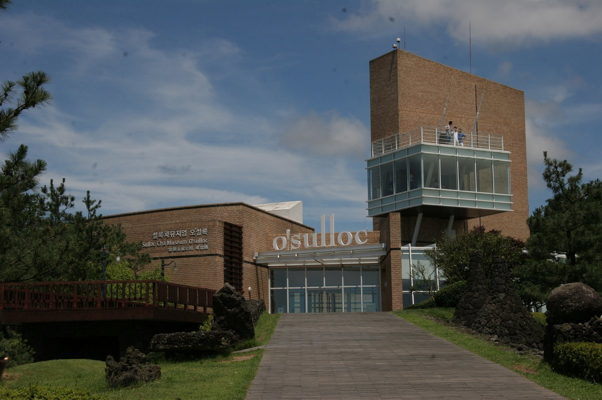

Overview
South Korea, officially the Republic of Korea, is a technologically advanced country in East Asia. With its capital in Seoul, it boasts a dynamic mix of modern cities, a diverse landscape, and a rich cultural heritage. Recognized for its economic prowess in industries like technology and manufacturing, South Korea has a democratic government and a market-oriented economy. The country has made global cultural waves through its music (K-pop) and entertainment industry. Despite a complex history, including the Korean War, South Korea has emerged as a major player on the international stage, maintaining diplomatic ties worldwide while retaining a distinct national identity.
Quick Facts
💬 Language: Hangul
💴 Currency: South Korean Won (KRW)
🕌 Religion: Buddhism and Christianity
🏢 Capital: Seoul
🌍 Climate: Spring, Summer, Autumn, Winter
Budget
Accommodation: Accommodation costs can vary from budget hostels to luxury hotels. On average, budget travelers might spend around $30-$70 per night, while mid-range options could range from $70-$150 or more.
Meals: Dining costs can also vary. Street food and local eateries are often more affordable, with meals ranging from $5-$15. Dining at mid-range restaurants may cost between $15-$40 per person.
Transportation: The cost of transportation depends on factors like inter-city travel, local transportation, and whether you plan to use taxis, buses, or trains. The T-money card is commonly used for public transportation in major cities. A daily transportation budget could range from $5-$30 or more, depending on your activities.
Interesting Places in Korea
Seoul
Namsan Tower
- Offering panoramic views of the city, N Seoul Tower is situated atop Namsan Mountain. Visitors can reach the tower by hiking or taking a cable car. Once at the top, enjoy breathtaking views of Seoul's skyline. The tower is beautifully illuminated at night, making it a popular spot for couples and photographers. Additionally, the surrounding Namsan Seoul Tower Plaza provides a romantic atmosphere with love locks and walking trails.
Gyeongbokgung Palace
- As the largest of the Five Grand Palaces built during the Joseon Dynasty, Gyeongbokgung is a majestic and historically significant site. The palace complex is renowned for its beautiful architecture, spacious courtyards, and the iconic Geunjeongjeon Hall. Visitors can witness the changing of the guard ceremony and explore the National Palace Museum of Korea, which is within the palace grounds.
Busan
Haeundae Beach
- One of the most famous beaches in South Korea, Haeundae Beach attracts both locals and tourists. The sandy shoreline is complemented by a vibrant atmosphere, with numerous cafes, restaurants, and shops along the beachfront. The area is particularly lively during the summer months.
Jagalchi Fish Market
- As one of Korea's largest fish markets, Jagalchi is a must-visit for seafood enthusiasts. The market features a wide variety of fresh seafood, and you can even enjoy a meal at one of the adjacent restaurants where your chosen seafood is prepared on the spot.
Jeju Island
O'Sulloc Tea Museum
- Jeju is known for its green tea plantations, and the O'Sulloc Tea Museum offers insights into the island's tea culture. Visitors can learn about tea production, enjoy tea tastings, and explore beautiful green tea fields surrounding the museum.